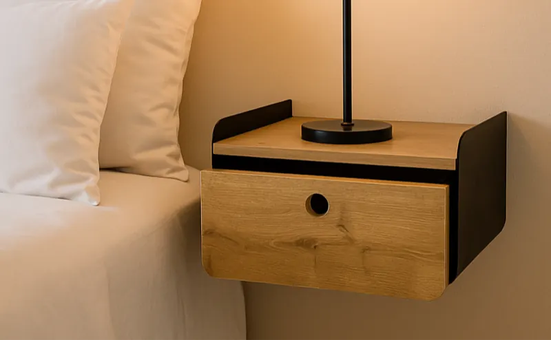

Le concept
étagères
Maretan offre une large gamme d’étagères murales (étagères, cubes, caisses, consoles…).
Un vaste choix de styles (authentique, industriel, moderne, naturel, fonctionnel…), issu de l’analyse des tendances, une sélection de matériaux allant du bois au métal en passant par le verre, ainsi que de nombreuses dimensions et finitions permettent de répondre à tous les besoins des consommateurs.